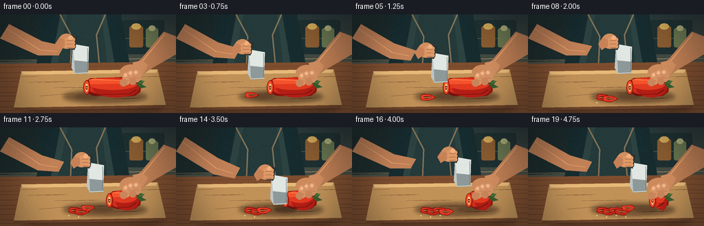
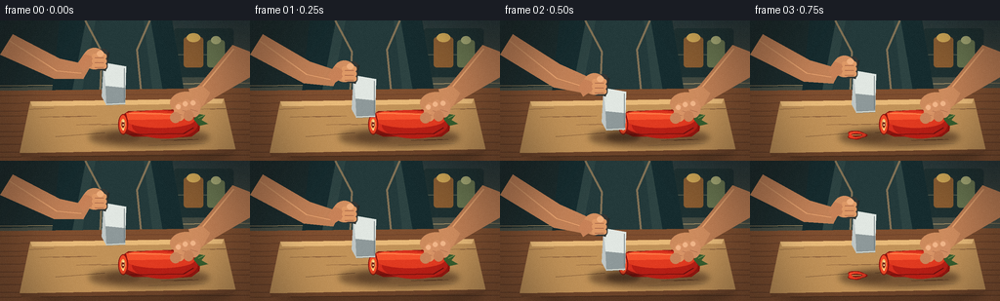
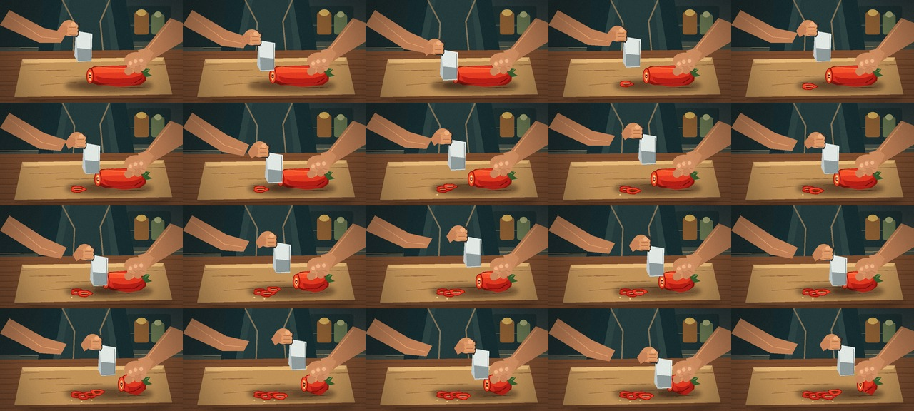

CODING AGENTS AS PIXEL WORLD MODELS
traex/GPT-5.6-Sol · motion_rationality_0026
点击播放 · 原生 RGB 像素
逐轮保存的候选
回放视频、检查图与代码变化。
每份候选均可单独播放。实际图片检查记录在下方工具轨迹中。
候选 01播放与检查图
点击播放 · 原生 RGB 像素


展开代码变化
--- 上一保存版本
+++ 本次保存版本
@@ -0,0 +1,242 @@
+from pathlib import Path
+import math
+import numpy as np
+from PIL import Image, ImageDraw, ImageFilter
+import artifact_io
+
+# Deterministic, hand-illustrated 2-D animation rendered at 3x for clean antialiasing.
+W, H, SS = 256, 144, 3
+RW, RH = W*SS, H*SS
+rng = np.random.default_rng(2602)
+
+
+def sc(v): return int(round(v*SS))
+def pts(seq): return [(sc(x), sc(y)) for x,y in seq]
+def ellipse(d, box, fill, outline=None, width=1):
+ d.ellipse(tuple(sc(x) for x in box), fill=fill, outline=outline, width=sc(width) if outline else 1)
+def polygon(d, xy, fill, outline=None): d.polygon(pts(xy), fill=fill, outline=outline)
+def line(d, xy, fill, width=1, joint='curve'): d.line(pts(xy), fill=fill, width=sc(width), joint=joint)
+def rounded(d, box, r, fill, outline=None, width=1):
+ d.rounded_rectangle(tuple(sc(x) for x in box), radius=sc(r), fill=fill, outline=outline, width=sc(width))
+
+def soft_ellipse(im, box, color, blur=4):
+ lay = Image.new('RGBA', im.size, (0,0,0,0)); md=ImageDraw.Draw(lay)
+ md.ellipse(tuple(sc(x) for x in box), fill=color)
+ im.alpha_composite(lay.filter(ImageFilter.GaussianBlur(sc(blur))))
+
+def gradient_fill(im, mask, top, bot):
+ yy=np.linspace(0,1,RH)[:,None,None]
+ a=np.array(top)[None,None,:]*(1-yy)+np.array(bot)[None,None,:]*yy
+ a=np.tile(a,(1,RW,1)).astype(np.uint8)
+ layer=Image.fromarray(a,'RGB').convert('RGBA')
+ im.alpha_composite(Image.composite(layer,Image.new('RGBA',im.size),(mask)))
+
+def lobed_ring(draw, cx, cy, scale=1.0, rot=0, fresh=False):
+ # A fallen pepper ring seen obliquely: irregular lobes, cream ribs, and hollow center.
+ outer=[]; inner=[]
+ for k in range(48):
+ a=2*math.pi*k/48
+ rr=1 + .10*math.cos(3*a+rot) + .07*math.cos(5*a-.4)
+ outer.append((cx+scale*10.5*rr*math.cos(a), cy+scale*4.7*rr*math.sin(a)))
+ polygon(draw, outer, '#8d130e')
+ # bright cut surface inset
+ mid=[]
+ for k in range(48):
+ a=2*math.pi*k/48; rr=1+.09*math.cos(3*a+rot)+.05*math.cos(5*a)
+ mid.append((cx+scale*9.5*rr*math.cos(a),cy+scale*3.8*rr*math.sin(a)))
+ polygon(draw,mid,'#ed3b22' if fresh else '#cf291a')
+ inn=[]
+ for k in range(40):
+ a=2*math.pi*k/40; rr=1+.12*math.cos(3*a+.7)
+ inn.append((cx+scale*5.7*rr*math.cos(a),cy+scale*1.75*rr*math.sin(a)))
+ polygon(draw,inn,'#6c2015')
+ line(draw,[(cx-5*scale,cy),(cx+5*scale,cy)],'#f5c66a',.8)
+ # tiny glossy highlight
+ line(draw,[(cx-7*scale,cy-2.4*scale),(cx-2*scale,cy-3.2*scale)],(255,113,69),.8)
+
+def render_frame(fi):
+ # Warm cinematic kitchen with a subtle photographic grain.
+ y=np.arange(RH)[:,None]
+ top=np.array([40,56,58.]); mid=np.array([79,83,70.]); bottom=np.array([166,118,69.])
+ t=np.clip(y/(RH*.64),0,1)[:,:,None]
+ bg=top[None,None,:]*(1-t)+mid[None,None,:]*t
+ bg=np.repeat(bg,RW,axis=1)
+ im=Image.fromarray(np.clip(bg,0,255).astype(np.uint8),'RGB').convert('RGBA')
+ d=ImageDraw.Draw(im)
+
+ # Defocused kitchen cabinets, backsplash, jars, and warm practical light.
+ polygon(d,[(0,0),(72,0),(68,67),(0,69)],(27,43,44,255))
+ line(d,[(67,0),(67,69)],(108,101,74,120),1)
+ rounded(d,(178,8,239,58),3,(29,48,49,255))
+ line(d,[(181,35),(237,35)],(83,91,77,180),1)
+ rounded(d,(188,17,208,48),3,(137,92,49,255)); rounded(d,(212,20,230,48),3,(103,116,79,255))
+ ellipse(d,(191,13,205,22),(215,173,89,180)); ellipse(d,(216,16,226,24),(183,187,129,170))
+ # window glow and backsplash seam
+ soft_ellipse(im,(91,-25,175,72),(255,213,134,38),10)
+ d=ImageDraw.Draw(im)
+ line(d,[(0,67),(256,64)],(183,157,109,90),1)
+ line(d,[(0,74),(256,71)],(36,48,46,190),2)
+
+ # Cook's torso and apron in the middle background.
+ polygon(d,[(61,0),(176,0),(190,83),(52,84)],(22,44,47,255))
+ polygon(d,[(88,0),(154,0),(168,81),(72,82)],(45,67,66,255))
+ polygon(d,[(98,0),(147,0),(157,82),(82,82)],(36,58,59,255))
+ line(d,[(87,0),(104,32),(102,80)],(132,115,86,175),2)
+ line(d,[(153,0),(140,30),(145,81)],(132,115,86,160),2)
+
+ # Counter and board
+ polygon(d,[(0,72),(256,69),(256,144),(0,144)],(126,78,47,255))
+ # wood grain on counter
+ for k in range(10):
+ yy=77+k*7+(k%3)
+ line(d,[(0,yy),(256,yy-2)],(93,57,40,70),.45)
+ soft_ellipse(im,(26,120,239,149),(20,16,12,95),5)
+ d=ImageDraw.Draw(im)
+ polygon(d,[(31,83),(229,80),(241,132),(20,136)],(193,146,88,255))
+ polygon(d,[(31,83),(229,80),(227,85),(33,88)],(232,186,121,255))
+ polygon(d,[(20,136),(241,132),(238,136),(23,140)],(108,67,41,255))
+ # board grain and knife marks
+ for k in range(13):
+ x=30+(k*37)%198
+ line(d,[(x,91+(k%5)*8),(x+25+(k%4)*7,90+(k%5)*8)],(137,93,59,85),.4)
+ line(d,[(57,119),(107,115)],(116,77,49,100),.55)
+ line(d,[(152,128),(209,126)],(235,190,126,75),.5)
+
+ cycle=fi//4
+ phase=fi%4
+ completed=cycle + (1 if phase==3 else 0)
+ # Knife vertical action (five clear chops); tiny ease at top and recoil after contact.
+ dy=[-18,-5,8,-10][phase]
+ cut_x=124+cycle*11
+ blade_bottom=104+dy
+ # arm/hand secondary motion follows knife
+ hx=cut_x-29; hy=blade_bottom-50
+
+ # Left forearm enters from right and braces the uncut pepper.
+ brace_bob=math.sin(fi*.48)*.7
+ polygon(d,[(256,32),(238,25),(205,65+brace_bob),(181,86+brace_bob),(193,98),(220,79),(256,58)],(190,126,84,255))
+ line(d,[(239,29),(207,68),(186,89)],(233,164,111,190),1.2)
+ # right forearm behind the knife hand
+ polygon(d,[(13,14),(0,35),(55,66+dy*.35),(85,70+dy*.55),(93,55+dy*.5),(61,43+dy*.22)],(194,129,87,255))
+ line(d,[(10,21),(58,57+dy*.3),(83,63+dy*.5)],(235,165,112,175),1)
+
+ # Cast shadow of pepper and pieces.
+ soft_ellipse(im,(91,110,214,130),(35,15,10,120),3)
+ d=ImageDraw.Draw(im)
+
+ # Main pepper shortens from the cut end while the far/stem end remains fixed.
+ left=124+completed*11
+ left=min(left,184)
+ # Deep red underside / silhouette made from lobes.
+ body=[(left,98),(left+7,93),(184,91),(197,96),(205,103),(204,113),(196,119),
+ (184,120),(left+12,119),(left,114)]
+ polygon(d,body,'#8f160f')
+ # colored lobes and highlights
+ ellipse(d,(left+2,92,198,118),'#d52d1d')
+ ellipse(d,(left+11,94,202,121),'#b51e15')
+ ellipse(d,(left+5,94,199,110),'#e13a20')
+ polygon(d,[(left+5,95),(left+14,93),(190,97),(184,101),(left+7,102)],(245,82,44,190))
+ line(d,[(left+8,95),(184,96),(194,100)],(255,131,75),1.2)
+ line(d,[(left+9,117),(188,116),(198,110)],(104,16,15),1)
+ # Green stem at right
+ polygon(d,[(198,101),(204,96),(210,97),(206,102),(213,106),(204,108)],'#365d2e')
+ line(d,[(203,100),(209,97)],'#829652',1)
+
+ # Fresh exposed cut face at the moving boundary.
+ ellipse(d,(left-3,96,left+7,117),'#8e160f')
+ ellipse(d,(left-2,97,left+5.7,116),'#f04a27')
+ ellipse(d,(left-.3,101,left+4.1,112),'#f4bc66')
+ ellipse(d,(left+.4,103,left+3.3,110),'#7c251a')
+ for sy in (102.8,106.2,111.3):
+ ellipse(d,(left+1.2,sy,left+2.6,sy+1.4),'#ffe0a0')
+
+ # Supporting hand, curled fingertips kept safely behind the blade.
+ # palm
+ ellipse(d,(174,73+brace_bob,207,96+brace_bob),(205,139,93,255))
+ polygon(d,[(193,70+brace_bob),(207,67+brace_bob),(215,74+brace_bob),(208,87+brace_bob),(198,91+brace_bob)],(207,141,95,255))
+ # arched fingers atop pepper with visible knuckles/nails
+ for j,(fx,fy) in enumerate([(178,84),(185,81),(193,80)]):
+ ellipse(d,(fx,fy+brace_bob,fx+12,fy+19+brace_bob),(218-j*3,149-j*2,101,255))
+ ellipse(d,(fx+2,fy+2+brace_bob,fx+7,fy+7+brace_bob),(242,182,137,210))
+ line(d,[(fx+2,fy+11+brace_bob),(fx+9,fy+13+brace_bob)],(159,96,69),.55)
+ # fingertips rest on far side, not blade path
+ ellipse(d,(174,94+brace_bob,185,105+brace_bob),(202,133,91,255))
+ ellipse(d,(188,92+brace_bob,198,103+brace_bob),(202,133,91,255))
+
+ # Fallen pepper rings in the foreground; a new one appears as the blade rises.
+ for i in range(completed):
+ # newest piece tips slightly for one frame, then settles among the others
+ cx=109+i*9.1
+ cy=121.0+(i%2)*2.1
+ if i==completed-1 and phase==3:
+ cy=117.5; scl=.92
+ else: scl=1.0
+ lobed_ring(d,cx,cy,scl,rot=.55*i,fresh=(i==completed-1))
+
+ # Blade shadow grows darker at board contact.
+ shadow_alpha=55 if phase!=2 else 115
+ soft_ellipse(im,(cut_x-15,115,cut_x+19,124),(25,15,12,shadow_alpha),2)
+ d=ImageDraw.Draw(im)
+
+ # Knife handle and broad chef's blade, rendered over the pepper.
+ # blade is tilted slightly forward to make the slicing plane readable
+ blade=[(cut_x-18,blade_bottom-43),(cut_x+5,blade_bottom-39),(cut_x+4,blade_bottom),
+ (cut_x-15,blade_bottom+1),(cut_x-20,blade_bottom-8)]
+ polygon(d,blade,'#bfc6c5')
+ polygon(d,[(cut_x-18,blade_bottom-43),(cut_x+5,blade_bottom-39),(cut_x+4,blade_bottom-17),(cut_x-16,blade_bottom-19)],(225,231,226,255))
+ polygon(d,[(cut_x-16,blade_bottom-19),(cut_x+4,blade_bottom-17),(cut_x+4,blade_bottom),(cut_x-15,blade_bottom+1)],(142,153,154,255))
+ line(d,[(cut_x-15,blade_bottom),(cut_x+4,blade_bottom-1)],(245,246,232),1)
+ line(d,[(cut_x+3,blade_bottom-37),(cut_x+3,blade_bottom-3)],(105,117,119),.55)
+ # handle leading up-left
+ polygon(d,[(cut_x-25,blade_bottom-56),(cut_x-12,blade_bottom-53),(cut_x-16,blade_bottom-34),(cut_x-29,blade_bottom-38)],'#282b29')
+ rounded(d,(cut_x-29,blade_bottom-57,cut_x-14,blade_bottom-35),4,'#343735')
+ line(d,[(cut_x-26,blade_bottom-53),(cut_x-18,blade_bottom-38)],(93,95,88),1)
+ ellipse(d,(cut_x-23,blade_bottom-49,cut_x-21,blade_bottom-47),(194,190,165,255))
+ ellipse(d,(cut_x-20,blade_bottom-42,cut_x-18,blade_bottom-40),(194,190,165,255))
+
+ # Knife hand wraps naturally around handle.
+ ellipse(d,(hx-10,hy-8,hx+13,hy+14),(210,143,96,255))
+ polygon(d,[(hx-9,hy-2),(hx-15,hy+7),(hx-10,hy+16),(hx-1,hy+10),(hx+2,hy+2)],(200,130,88,255))
+ for j in range(3):
+ fy=hy-2+j*5
+ rounded(d,(hx-1,fy,hx+14,fy+5.3),2.4,(222,153,102,255))
+ line(d,[(hx+2,fy+4),(hx+11,fy+4)],(164,98,70),.5)
+ ellipse(d,(hx+4,hy-5,hx+11,hy+1),(239,176,126,210))
+
+ # A few crumbs/seeds accumulate, reinforcing temporal continuity.
+ for i in range(max(0,completed-1)):
+ sx=99+i*14; sy=128+(i%2)*2
+ ellipse(d,(sx,sy,sx+2.3,sy+1.4),'#f5cf83')
+
+ # Gentle foreground vignette and warm highlight.
+ vig=Image.new('L',(RW,RH),0); vd=ImageDraw.Draw(vig)
+ vd.rectangle((0,0,RW,RH),fill=85)
+ vd.ellipse((sc(18),sc(-12),sc(244),sc(163)),fill=0)
+ vig=vig.filter(ImageFilter.GaussianBlur(sc(22)))
+ shade=Image.new('RGBA',im.size,(13,12,12,0)); shade.putalpha(vig)
+ im.alpha_composite(shade)
+
+ out=im.convert('RGB').resize((W,H),Image.Resampling.LANCZOS)
+ arr=np.array(out).astype(np.int16)
+ # Fine fixed-strength film grain, unique each frame but visually unobtrusive.
+ local=np.random.default_rng(9000+fi)
+ grain=local.normal(0,1.25,(H,W,1))
+ arr=np.clip(arr+grain,0,255).astype(np.uint8)
+ return arr
+
+
+def main():
+ frames=np.stack([render_frame(i) for i in range(20)],axis=0)
+ case_dir=Path(__file__).resolve().parent
+ artifact_io.save(frames,case_dir)
+ # Also create a conventional silent MP4 preview when OpenCV is available.
+ try:
+ import cv2
+ vw=cv2.VideoWriter(str(case_dir/'preview.mp4'),cv2.VideoWriter_fourcc(*'mp4v'),4.0,(W,H))
+ for fr in frames: vw.write(cv2.cvtColor(fr,cv2.COLOR_RGB2BGR))
+ vw.release()
+ except Exception:
+ pass
+
+if __name__=='__main__':
+ main()
可观测工具轨迹
实际执行的命令与返回图片。
命令 1exit 0
/bin/bash -lc "find . -maxdepth 2 -type f -printf '%p %s bytes\\n' | sort"
命令 2exit 0
/bin/bash -lc "cat prompt.txt && printf '\\n---RULES---\\n' && cat GENERATION_RULES.md && printf '\\n---SPEC---\\n' && cat task_spec.json"
命令 3exit 0
/bin/bash -lc "which ffmpeg; which python3; python3 - <<'PY' mods=['cv2','PIL','numpy','imageio','moviepy','cairo'] for m in mods: try: x=__import__(m); print(m,'ok',getattr(x,'__version__','')) except Exception as e: print(m,'no',e) PY"
命令 4exit 0
/bin/bash -lc 'cat artifact_io.py'
命令 5exit 2
/bin/bash -lc "cat > generate.py <<'PY'
from pathlib import Path
import math
import numpy as np
from PIL import Image, ImageDraw, ImageFilter
import artifact_io
# Deterministic, hand-illustrated 2-D animation rendered at 3x for clean antialiasing.
W, H, SS = 256, 144, 3
RW, RH = W*SS, H*SS
rng = np.random.default_rng(2602)
def sc(v): return int(round(v*SS))
def pts(seq): return [(sc(x), sc(y)) for x,y in seq]
def ellipse(d, box, fill, outline=None, width=1):
d.ellipse(tuple(sc(x) for x in box), fill=fill, outline=outline, width=sc(width) if outline else 1)
def polygon(d, xy, fill, outline=None): d.polygon(pts(xy), fill=fill, outline=outline)
def line(d, xy, fill, width=1, joint='curve'): d.line(pts(xy), fill=fill, width=sc(width), joint=joint)
def rounded(d, box, r, fill, outline=None, width=1):
d.rounded_rectangle(tuple(sc(x) for x in box), radius=sc(r), fill=fill, outline=outline, width=sc(width))
def soft_ellipse(im, box, color, blur=4):
lay = Image.new('RGBA', im.size, (0,0,0,0)); md=ImageDraw.Draw(lay)
md.ellipse(tuple(sc(x) for x in box), fill=color)
im.alpha_composite(lay.filter(ImageFilter.GaussianBlur(sc(blur))))
def gradient_fill(im, mask, top, bot):
yy=np.linspace(0,1,RH)[:,None,None]
a=np.array(top)[None,None,:]*(1-yy)+np.array(bot)[None,None,:]*yy
a=np.tile(a,(1,RW,1)).astype(np.uint8)
layer=Image.fromarray(a,'RGB').convert('RGBA')
im.alpha_composite(Image.composite(layer,Image.new('RGBA',im.size),(mask)))
def lobed_ring(draw, cx, cy, scale=1.0, rot=0, fresh=False):
# A fallen pepper ring seen obliquely: irregular lobes, cream ribs, and hollow center.
outer=[]; inner=[]
for k in range(48):
a=2*math.pi*k/48
rr=1 + .10*math.cos(3*a+rot) + .07*math.cos(5*a-.4)
outer.append((cx+scale*10.5*rr*math.cos(a), cy+scale*4.7*rr*math.sin(a)))
polygon(draw, outer, '#8d130e')
# bright cut surface inset
mid=[]
for k in range(48):
a=2*math.pi*k/48; rr=1+.09*math.cos(3*a+rot)+.05*math.cos(5*a)
mid.append((cx+scale*9.5*rr*math.cos(a),cy+scale*3.8*rr*math.sin(a)))
polygon(draw,mid,'#ed3b22' if fresh else '#cf291a')
inn=[]
for k in range(40):
a=2*math.pi*k/40; rr=1+.12*math.cos(3*a+.7)
inn.append((cx+scale*5.7*rr*math.cos(a),cy+scale*1.75*rr*math.sin(a)))
polygon(draw,inn,'#6c2015')
line(draw,[(cx-5*scale,cy),(cx+5*scale,cy)],'#f5c66a',.8)
# tiny glossy highlight
line(draw,[(cx-7*scale,cy-2.4*scale),(cx-2*scale,cy-3.2*scale)],(255,113,69),.8)
def render_frame(fi):
# Warm cinematic kitchen with a subtle photographic grain.
y=np.arange(RH)[:,None]
top=np.array([40,56,58.]); mid=np.array([79,83,70.]); bottom=np.array([166,118,69.])
t=np.clip(y/(RH*.64),0,1)[:,:,None]
bg=top[None,None,:]*(1-t)+mid[None,None,:]*t
bg=np.repeat(bg,RW,axis=1)
im=Image.fromarray(np.clip(bg,0,255).astype(np.uint8),'RGB').convert('RGBA')
d=ImageDraw.Draw(im)
# Defocused kitchen cabinets, backsplash, jars, and warm practical light.
polygon(d,[(0,0),(72,0),(68,67),(0,69)],(27,43,44,255))
line(d,[(67,0),(67,69)],(108,101,74,120),1)
rounded(d,(178,8,239,58),3,(29,48,49,255))
line(d,[(181,35),(237,35)],(83,91,77,180),1)
rounded(d,(188,17,208,48),3,(137,92,49,255)); rounded(d,(212,20,230,48),3,(103,116,79,255))
ellipse(d,(191,13,205,22),(215,173,89,180)); ellipse(d,(216,16,226,24),(183,187,129,170))
# window glow and backsplash seam
soft_ellipse(im,(91,-25,175,72),(255,213,134,38),10)
d=ImageDraw.Draw(im)
line(d,[(0,67),(256,64)],(183,157,109,90),1)
line(d,[(0,74),(256,71)],(36,48,46,190),2)
# Cook's torso and apron in the middle background.
polygon(d,[(61,0),(176,0),(190,83),(52,84)],(22,44,47,255))
polygon(d,[(88,0),(154,0),(168,81),(72,82)],(45,67,66,255))
polygon(d,[(98,0),(147,0),(157,82),(82,82)],(36,58,59,255))
line(d,[(87,0),(104,32),(102,80)],(132,115,86,175),2)
line(d,[(153,0),(140,30),(145,81)],(132,115,86,160),2)
# Counter and board
polygon(d,[(0,72),(256,69),(256,144),(0,144)],(126,78,47,255))
# wood grain on counter
for k in range(10):
yy=77+k*7+(k%3)
line(d,[(0,yy),(256,yy-2)],(93,57,40,70),.45)
soft_ellipse(im,(26,120,239,149),(20,16,12,95),5)
d=ImageDraw.Draw(im)
polygon(d,[(31,83),(229,80),(241,132),(20,136)],(193,146,88,255))
polygon(d,[(31,83),(229,80),(227,85),(33,88)],(232,186,121,255))
polygon(d,[(20,136),(241,132),(238,136),(23,140)],(108,67,41,255))
# board grain and knife marks
for k in range(13):
x=30+(k*37)%198
line(d,[(x,91+(k%5)*8),(x+25+(k%4)*7,90+(k%5)*8)],(137,93,59,85),.4)
line(d,[(57,119),(107,115)],(116,77,49,100),.55)
line(d,[(152,128),(209,126)],(235,190,126,75),.5)
cycle=fi//4
phase=fi%4
completed=cycle + (1 if phase==3 else 0)
# Knife vertical action (five clear chops); tiny ease at top and recoil after contact.
dy=[-18,-5,8,-10][phase]
cut_x=124+cycle*11
blade_bottom=104+dy
# arm/hand secondary motion follows knife
hx=cut_x-29; hy=blade_bottom-50
# Left forearm enters from right and braces the uncut pepper.
brace_bob=math.sin(fi*.48)*.7
polygon(d,[(256,32),(238,25),(205,65+brace_bob),(181,86+brace_bob),(193,98),(220,79),(256,58)],(190,126,84,255))
line(d,[(239,29),(207,68),(186,89)],(233,164,111,190),1.2)
# right forearm behind the knife hand
polygon(d,[(13,14),(0,35),(55,66+dy*.35),(85,70+dy*.55),(93,55+dy*.5),(61,43+dy*.22)],(194,129,87,255))
line(d,[(10,21),(58,57+dy*.3),(83,63+dy*.5)],(235,165,112,175),1)
# Cast shadow of pepper and pieces.
soft_ellipse(im,(91,110,214,130),(35,15,10,120),3)
d=ImageDraw.Draw(im)
# Main pepper shortens from the cut end while the far/stem end remains fixed.
left=124+completed*11
left=min(left,184)
# Deep red underside / silhouette made from lobes.
body=[(left,98),(left+9,92),(left+24,91),(left+38,94),(left+52,91),(197,96),(205,103),(204,113),(196,119),
(left+55,120),(left+40,118),(left+27,122),(left+13,119),(left,114)]
polygon(d,body,'#8f160f')
# colored lobes and highlights
ellipse(d,(left+3,92,left+49,118),'#d52d1d')
ellipse(d,(left+28,93,202,121),'#b51e15')
ellipse(d,(left+35,94,199,110),'#e13a20')
polygon(d,[(left+7,95),(left+26,93),(left+42,97),(left+31,101),(left+10,102)],(245,82,44,190))
line(d,[(left+13,95),(left+31,96),(left+43,100)],(255,131,75),1.2)
line(d,[(left+47,117),(188,116),(198,110)],(104,16,15),1)
# Green stem at right
polygon(d,[(198,101),(204,96),(210,97),(206,102),(213,106),(204,108)],'#365d2e')
line(d,[(203,100),(209,97)],'#829652',1)
# Fresh exposed cut face at the moving boundary.
ellipse(d,(left-3,96,left+7,117),'#8e160f')
ellipse(d,(left-2,97,left+5.7,116),'#f04a27')
ellipse(d,(left-.3,101,left+4.1,112),'#f4bc66')
ellipse(d,(left+.4,103,left+3.3,110),'#7c251a')
for sy in (102.8,106.2,111.3):
ellipse(d,(left+1.2,sy,left+2.6,sy+1.4),'#ffe0a0')
# Supporting hand, curled fingertips kept safely behind the blade.
# palm
ellipse(d,(174,73+brace_bob,207,96+brace_bob),(205,139,93,255))
polygon(d,[(193,70+brace_bob),(207,67+brace_bob),(215,74+brace_bob),(208,87+brace_bob),(198,91+brace_bob)],(207,141,95,255))
# arched fingers atop pepper with visible knuckles/nails
for j,(fx,fy) in enumerate([(178,84),(185,81),(193,80)]):
ellipse(d,(fx,fy+brace_bob,fx+12,fy+19+brace_bob),(218-j*3,149-j*2,101,255))
ellipse(d,(fx+2,fy+2+brace_bob,fx+7,fy+7+brace_bob),(242,182,137,210))
line(d,[(fx+2,fy+11+brace_bob),(fx+9,fy+13+brace_bob)],(159,96,69),.55)
# fingertips rest on far side, not blade path
ellipse(d,(174,94+brace_bob,185,105+brace_bob),(202,133,91,255))
ellipse(d,(188,92+brace_bob,198,103+brace_bob),(202,133,91,255))
# Fallen pepper rings in the foreground; a new one appears as the blade rises.
for i in range(completed):
# newest piece tips slightly for one frame, then settles among the others
cx=109+i*9.1
cy=121.0+(i%2)*2.1
if i==completed-1 and phase==3:
cy=117.5; scl=.92
else: scl=1.0
lobed_ring(d,cx,cy,scl,rot=.55*i,fresh=(i==completed-1))
# Blade shadow grows darker at board contact.
shadow_alpha=55 if phase"'!=2 else 115
soft_ellipse(im,(cut_x-15,115,cut_x+19,124),(25,15,12,shadow_alpha),2)
d=ImageDraw.Draw(im)
# Knife handle and broad chef'"'s blade, rendered over the pepper.
# blade is tilted slightly forward to make the slicing plane readable
blade=[(cut_x-18,blade_bottom-43),(cut_x+5,blade_bottom-39),(cut_x+4,blade_bottom),
(cut_x-15,blade_bottom+1),(cut_x-20,blade_bottom-8)]
polygon(d,blade,'#bfc6c5')
polygon(d,[(cut_x-18,blade_bottom-43),(cut_x+5,blade_bottom-39),(cut_x+4,blade_bottom-17),(cut_x-16,blade_bottom-19)],(225,231,226,255))
polygon(d,[(cut_x-16,blade_bottom-19),(cut_x+4,blade_bottom-17),(cut_x+4,blade_bottom),(cut_x-15,blade_bottom+1)],(142,153,154,255))
line(d,[(cut_x-15,blade_bottom),(cut_x+4,blade_bottom-1)],(245,246,232),1)
line(d,[(cut_x+3,blade_bottom-37),(cut_x+3,blade_bottom-3)],(105,117,119),.55)
# handle leading up-left
polygon(d,[(cut_x-25,blade_bottom-56),(cut_x-12,blade_bottom-53),(cut_x-16,blade_bottom-34),(cut_x-29,blade_bottom-38)],'#282b29')
rounded(d,(cut_x-29,blade_bottom-57,cut_x-14,blade_bottom-35),4,'#343735')
line(d,[(cut_x-26,blade_bottom-53),(cut_x-18,blade_bottom-38)],(93,95,88),1)
ellipse(d,(cut_x-23,blade_bottom-49,cut_x-21,blade_bottom-47),(194,190,165,255))
ellipse(d,(cut_x-20,blade_bottom-42,cut_x-18,blade_bottom-40),(194,190,165,255))
# Knife hand wraps naturally around handle.
ellipse(d,(hx-10,hy-8,hx+13,hy+14),(210,143,96,255))
polygon(d,[(hx-9,hy-2),(hx-15,hy+7),(hx-10,hy+16),(hx-1,hy+10),(hx+2,hy+2)],(200,130,88,255))
for j in range(3):
fy=hy-2+j*5
rounded(d,(hx-1,fy,hx+14,fy+5.3),2.4,(222,153,102,255))
line(d,[(hx+2,fy+4),(hx+11,fy+4)],(164,98,70),.5)
ellipse(d,(hx+4,hy-5,hx+11,hy+1),(239,176,126,210))
# A few crumbs/seeds accumulate, reinforcing temporal continuity.
for i in range(max(0,completed-1)):
sx=99+i*14; sy=128+(i%2)*2
ellipse(d,(sx,sy,sx+2.3,sy+1.4),'#f5cf83')
# Gentle foreground vignette and warm highlight.
vig=Image.new('L',(RW,RH),0); vd=ImageDraw.Draw(vig)
vd.rectangle((0,0,RW,RH),fill=85)
vd.ellipse((sc(18),sc(-12),sc(244),sc(163)),fill=0)
vig=vig.filter(ImageFilter.GaussianBlur(sc(22)))
shade=Image.new('RGBA',im.size,(13,12,12,0)); shade.putalpha(vig)
im.alpha_composite(shade)
out=im.convert('RGB').resize((W,H),Image.Resampling.LANCZOS)
arr=np.array(out).astype(np.int16)
# Fine fixed-strength film grain, unique each frame but visually unobtrusive.
local=np.random.default_rng(9000+fi)
grain=local.normal(0,1.25,(H,W,1))
arr=np.clip(arr+grain,0,255).astype(np.uint8)
return arr
def main():
frames=np.stack([render_frame(i) for i in range(20)],axis=0)
case_dir=Path(__file__).resolve().parent
artifact_io.save(frames,case_dir)
# Also create a conventional silent MP4 preview when OpenCV is available.
try:
import cv2
vw=cv2.VideoWriter(str(case_dir/'preview.mp4'),cv2.VideoWriter_fourcc(*'mp4v'),4.0,(W,H))
for fr in frames: vw.write(cv2.cvtColor(fr,cv2.COLOR_RGB2BGR))
vw.release()
except Exception:
pass
if __name__=='__main__':
main()
PY
python3 generate.py
ls -lh pixels.npz inspection.png transition_check.png index.html preview.mp4 frames/00.png frames/19.png"命令 6exit 0
/bin/bash -lc 'python3 generate.py && ls -lh pixels.npz inspection.png transition_check.png index.html preview.mp4 frames/00.png frames/19.png'
命令 7exit 127
/bin/bash -lc 'ffprobe -v error -show_entries stream=codec_name,width,height,r_frame_rate,nb_frames,duration -of default=noprint_wrappers=1 preview.mp4'
命令 8exit 0
/bin/bash -lc "python3 - <<'PY'
import numpy as np
from pathlib import Path
from PIL import Image
z=np.load('pixels.npz')['pixels']
print('pixels',z.shape,z.dtype,'frames',len(list(Path('frames').glob('*.png'))))
# verify RGB frame dimensions and unique consecutive deltas
ims=[np.array(Image.open(f'frames/{i:02}.png').convert('RGB')) for i in range(20)]
print('frame shape',ims[0].shape,'changed pixels per transition',[int(np.any(ims[i]"'!=ims[i-1],2).sum()) for i in range(1,20)])
# 5x4 all-frame sheet
sheet=Image.new('"'RGB',(256*5,144*4),(0,0,0))
for i,im in enumerate(ims): sheet.paste(Image.fromarray(im),(i%5*256,i//5*144))
sheet.save('.tmp/all20.jpg',quality=92)
PY"视觉工具实际返回图片 1

视觉工具实际返回图片 2

保存候选 1 份；完成命令 8 次；可验证图片返回 2 张。原始 API 响应与完整日志保留在本地。